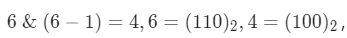
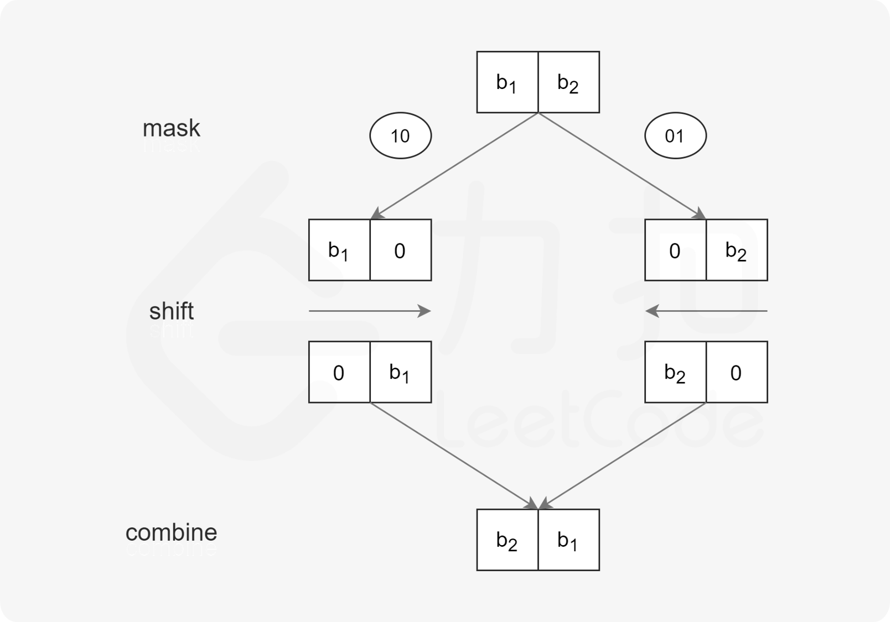

位运算
程序中的所有数在计算机内存中都是以二进制的形式储存的。位运算就是直接对整数在内存中的二进制位进行操作。比如，and运算本来是一个逻辑运算符，但整数与整数之间也可以进行and运算。举个例子，6的二进制是110，11的二进制是1011，那么6 and 11的结果就是2，它是二进制对应位进行逻辑运算的结果（0表示False，1表示True，空位都当0处理）。
231. 2 的幂
给你一个整数 n，请你判断该整数是否是 2 的幂次方。如果是，返回 true ；否则，返回 false 。
如果存在一个整数 x 使得 n == 2^x ，则认为 n 是 2 的幂次方。
1 | 示例 1： |
方法一：二进制表示
在一些语言中，位运算的优先级较低，需要注意运算顺序。
1 | class Solution { |
复杂度分析
- 时间复杂度：O(1)。
- 空间复杂度：O*(1)。
方法二：判断是否为最大 22 的幂的约数
思路与算法
除了使用二进制表示判断之外，还有一种较为取巧的做法。
在题目给定的 32 位有符号整数的范围内，最大的 2 的幂为 2^{30} = 1073741824 我们只需要判断 n 是否是 2^{30} 的约数即可。
1 | class Solution { |
复杂度分析
- 时间复杂度：O(1)。
- 空间复杂度：O(1)。
191. 位1的个数
编写一个函数，输入是一个无符号整数（以二进制串的形式），返回其二进制表达式中数字位数为 ‘1’ 的个数（也被称为汉明重量）。
提示：
- 请注意，在某些语言（如 Java）中，没有无符号整数类型。在这种情况下，输入和输出都将被指定为有符号整数类型，并且不应影响您的实现，因为无论整数是有符号的还是无符号的，其内部的二进制表示形式都是相同的。
- 在 Java 中，编译器使用二进制补码记法来表示有符号整数。因此，在上面的 示例 3 中，输入表示有符号整数 -3。
1 | 示例 1： |
方法一：循环检查二进制位
思路及解法
我们可以直接循环检查给定整数 n 的二进制位的每一位是否为 1。
具体代码中，当检查第 ii 位时，我们可以让 n 与 2^i 进行与运算，当且仅当 n 的第 i 位为 1 时，运算结果不为 0。
1 | public class Solution { |
复杂度分析
- 时间复杂度：O(k)，其中 k 是 int 型的二进制位数，k=32。我们需要检查 n 的二进制位的每一位，一共需要检查 32 位。
- 空间复杂度：O(1)，我们只需要常数的空间保存若干变量。
方法二：位运算优化
思路及解法
观察这个运算：n~\&~(n - 1)，其运算结果恰为把 n 的二进制位中的最低位的 1 变为 0 之后的结果。
如：运算结果 4 即为把 6 的二进制位中的最低位的 1 变为 0 之后的结果。
这样我们可以利用这个位运算的性质加速我们的检查过程，在实际代码中，我们不断让当前的 n 与 n−1 做与运算，直到 n 变为 0 即可。因为每次运算会使得 n 的最低位的 1 被翻转，因此运算次数就等于 n 的二进制位中 1 的个数。
1 | public class Solution { |
复杂度分析
- 时间复杂度：
O(logn)。循环次数等于n的二进制位中1的个数，最坏情况下n的二进制位全部为1。我们需要循环logn次。 - 空间复杂度：
O(1)，我们只需要常数的空间保存若干变量。
190. 颠倒二进制位
颠倒给定的 32 位无符号整数的二进制位。
提示：
- 请注意，在某些语言（如 Java）中，没有无符号整数类型。在这种情况下，输入和输出都将被指定为有符号整数类型，并且不应影响您的实现，因为无论整数是有符号的还是无符号的，其内部的二进制表示形式都是相同的。
- 在 Java 中，编译器使用二进制补码记法来表示有符号整数。因此，在上面的 示例 2 中，输入表示有符号整数 -3，输出表示有符号整数 -1073741825。
进阶:
如果多次调用这个函数，你将如何优化你的算法？
1 | 示例 1： |
方法一：逐位颠倒
思路
将 n 视作一个长为 32 的二进制串，从低位往高位枚举 n 的每一位，将其倒序添加到翻转结果 rev 中。
代码实现中，每枚举一位就将n 右移一位，这样当前 n 的最低位就是我们要枚举的比特位。当 n 为 0 时即可结束循环。
需要注意的是，在某些语言（如 Java）中，没有无符号整数类型，因此对 n 的右移操作应使用逻辑右移。
1 | public class Solution { |
复杂度分析
- 时间复杂度：
O(logn)。 - 空间复杂度：
O(1)。
方法二：位运算分治
思路
若要翻转一个二进制串，可以将其均分成左右两部分，对每部分递归执行翻转操作，然后将左半部分拼在右半部分的后面，即完成了翻转。
由于左右两部分的计算方式是相似的，利用位掩码和位移运算，我们可以自底向上地完成这一分治流程。

对于递归的最底层，我们需要交换所有奇偶位：
- 取出所有奇数位和偶数位；
- 将奇数位移到偶数位上，偶数位移到奇数位上。
类似地，对于倒数第二层，每两位分一组，按组号取出所有奇数组和偶数组，然后将奇数组移到偶数组上，偶数组移到奇数组上。以此类推。
需要注意的是，在某些语言（如Java）中，没有无符号整数类型，因此对 n 的右移操作应使用逻辑右移。
1 | public class Solution { |
复杂度分析
- 时间复杂度：
O(1)。 - 空间复杂度：
O(1)。
136. 只出现一次的数字
给定一个非空整数数组，除了某个元素只出现一次以外，其余每个元素均出现两次。找出那个只出现了一次的元素。
说明：
你的算法应该具有线性时间复杂度。 你可以不使用额外空间来实现吗？
1 | 示例 1: |
方法一：位运算
如果不考虑时间复杂度和空间复杂度的限制，这道题有很多种解法，可能的解法有如下几种。
使用集合存储数字。遍历数组中的每个数字，如果集合中没有该数字，则将该数字加入集合，如果集合中已经有该数字，则将该数字从集合中删除，最后剩下的数字就是只出现一次的数字。
使用哈希表存储每个数字和该数字出现的次数。遍历数组即可得到每个数字出现的次数，并更新哈希表，最后遍历哈希表，得到只出现一次的数字。
使用集合存储数组中出现的所有数字，并计算数组中的元素之和。由于集合保证元素无重复，因此计算集合中的所有元素之和的两倍，即为每个元素出现两次的情况下的元素之和。由于数组中只有一个元素出现一次，其余元素都出现两次，因此用集合中的元素之和的两倍减去数组中的元素之和，剩下的数就是数组中只出现一次的数字。
上述三种解法都需要额外使用 O(n) 的空间，其中 n是数组长度。
如何才能做到线性时间复杂度和常数空间复杂度呢？
答案是使用位运算。对于这道题，可使用异或运算 ⊕。异或运算有以下三个性质。
- 任何数和
0做异或运算，结果仍然是原来的数，即a⊕0=a。 - 任何数和其自身做异或运算，结果是
0，即a⊕a=0。 - 异或运算满足交换律和结合律，即 a⊕b⊕a=b⊕a⊕a=b⊕(a⊕a)=b⊕0=b。

假设数组中有 2m+1 个数，其中有 m 个数各出现两次，一个数出现一次。令 a1、a2、…、am为出现两次的 m 个数，a
m+1 为出现一次的数。根据性质 3，数组中的全部元素的异或运算结果总是可以写成如下形式：
(a1⊕a1)⊕(a2⊕a2)⊕⋯⊕(am⊕am)⊕am+1
根据性质 2 和性质 1，上式可化简和计算得到如下结果：
0⊕0⊕⋯⊕0⊕am+1=am+1
因此，数组中的全部元素的异或运算结果即为数组中只出现一次的数字。
1 | class Solution { |
复杂度分析
- 时间复杂度：
O(n)，其中n是数组长度。只需要对数组遍历一次。 - 空间复杂度：
O(1)。

...
...
Copyright 2021 sunfy.top ALL Rights Reserved